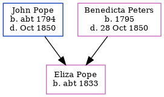

Eliza Pope c1833 -
[ Home ] | [ Calendar ] | [ Surnames Index ] | [ Errors ] | [ Family History ]The child of John Pope (a builder) and Benedicta Peters, Eliza Pope, the first cousin four-times-removed on the father's side of Nigel Horne, was born in Kent, England c. 18331 and baptised in Folkestone, Kent, England on 2 Jun 1833. On 6 Jun 1841, she was living at Fancy Street in Folkestone1.
Parents
- John Isaac was born c. 1794
- Benedicta was born in 1795
Citations
- 1841 England, Wales & Scotland Census - Findmypast (was age 7 and the daughter of the head of the household)
Media
Kent Baptisms - GBPRS/CANT/B/96146825
England Births & Baptisms 1538-1975 - R_885256397
Family Tree
Map
Generated by ged2site. Last updated on Jul 3, 2024